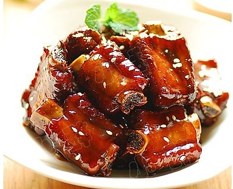
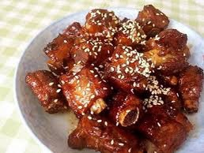
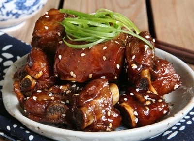

按一斤排骨，1大勺料酒，2大勺糖，3大勺醋，4大勺醬油，5大勺水或高湯的比例調成料汁，用筷子攪一攪讓糖能溶解。
把瀝乾水分的排骨放到熱油里炒一下，喜歡吃乾香的可以多炒一下，喜歡吃軟嫩的就不要炒太久，
然後加入上述2中調好的料汁，大火燒開後，改中小火慢慢煮40分鐘到一個小時，等排骨都熟了以後，再開大火收汁。
起鍋裝盤灑上一些熟芝麻粒就可以開吃了，是不是很簡單。
  
番茄炒蛋介紹 火腿玉米蛋炒飯介紹 宮保雞丁介紹 心得
練習 影片 音樂
Your browser does not support the audio element. Your browser does not support the video tag.